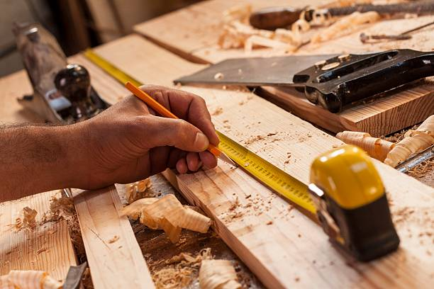
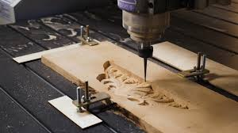
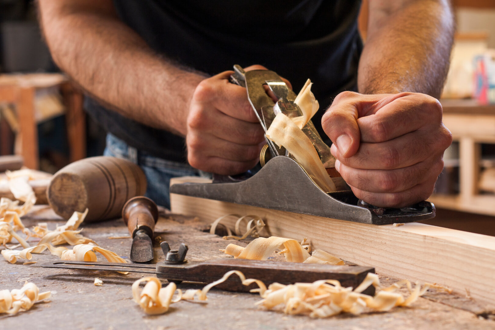

Featured project
Custom millwork, furniture, and architectural details
Cutline Co creates refined woodwork for homes, hospitality spaces, and branded interiors that need more than standard contractor-grade execution. Every project is shaped around clean lines, thoughtful material selection, and a finish that still looks right years later.

Featured project

Known for
Featured work
The section works best with one polished finished-result image supported by two craftsmanship and process images, so the brand shows both outcome and discipline.

Residential millwork
Designed for a modern home renovation, this featured build pairs integrated storage, warm timber selection, and crisp built-in alignment to create a seamless architectural result.

Built-ins
Architectural interiors
Services
Wall units, shelving systems, libraries, media walls, and integrated storage designed to fit the space cleanly and function beautifully.
Trim details, wall treatments, feature installations, and finish carpentry that support a refined interior rather than overpower it.
Tables, benches, vanities, and custom pieces made with a furniture-grade mindset and attention to proportion, grain, and finish.
Front-of-house millwork, display features, and hospitality-focused builds that need durability without losing design quality.
Why choose us
Every detail is approached with a builder’s discipline and a designer’s eye, from reveal lines to edge treatment and final finish consistency.
We prioritize wood selection, finish compatibility, and long-term performance so the final result feels substantial and ages well.
Clear scope alignment, realistic timelines, and organized execution help projects move forward without the usual confusion.
You know what is being built, where things stand, and what decisions matter before they become expensive problems.
Process
We review the space, the goals, the references, and the practical requirements so the project starts with clarity.
Scope, dimensions, materials, finishes, and pricing are aligned early so expectations stay grounded and decisions stay clean.
The work is fabricated with attention to precision, fit, durability, and the kind of detailing that reads as premium in person.
Completed work is delivered or installed with care so the final handoff feels finished, intentional, and ready to live with.
Testimonials
These are polished placeholders for now, sized to create a spacious, credibility-focused section without feeling crowded.
“The final built-ins completely changed the room. Everything felt precise, calm, and intentional, and the communication throughout the process was as strong as the craftsmanship.”
Private client, custom home project
“They understood the design direction immediately and delivered something that looked considered, not generic.”
Interior designer
“Professional, organized, and detail-focused from estimate to install.”
Builder partner
Materials and detail
Great custom work is not just about shape. It is about choosing the right material, understanding how it moves, finishing it correctly, and building with the kind of tolerance that makes everything feel effortless once installed.

Let’s talk
Share your scope, timeline, and inspiration. We’ll help shape the right approach for a clean, well-executed result.